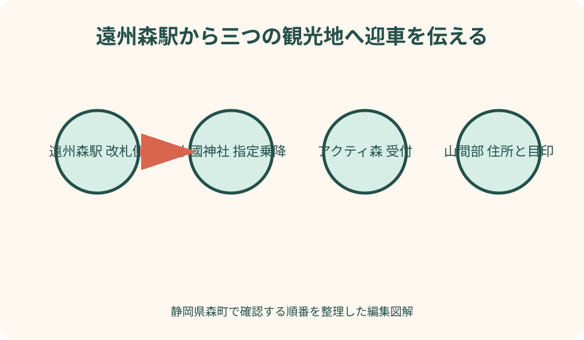
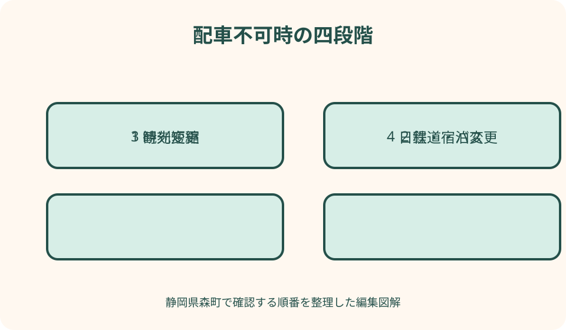

森町交通・タクシー｜最終確認 2026-08-10
静岡県森町のタクシー予約と観光利用｜駅・神社・山間部の迎車確認
静岡県森町の観光でタクシーを使う時は、『遠州森駅へ着けば待っている』『小國神社で帰りに呼べる』という前提を置きません。森町は町なか、一宮、問詰、三倉・天方などの山間部で迎車条件が異なり、紅葉、祭事、イベント、夜間は車両を確保できない場合があります。森町公式の交通リンクと静岡県タクシー協会から営業区域の事業者を探し、往路と復路を別々に予約確認します。料金は距離、時間、迎車、待機、有料道路等で変わるため固定額を断定せず、概算と加算条件を事業者へ聞きます。

タクシーは乗る前の配車確認から始まる
森町の駅や観光地にタクシーが常駐するとは限りません。到着してから探すのではなく、旅行日が決まった段階で事業者へ相談します。
森町公式の交通リンクは、静岡県タクシー協会へ進む入口です。協会の営業区域と会員事業者一覧を見て、森町への配車可否を各社へ尋ねます。
予約できる車両数、受付可能な時期、即時配車は事業者ごとに異なります。ウェブフォームを送信しただけで確定したと考えません。
本記事は筆者が特定会社を利用した比較体験ではありません。2026年8月10日に確認した自治体と交通事業者の公式情報から手順を示します。
一般タクシーと地域タクシーを混同しない
一般タクシーは事業者へ依頼する個別輸送です。一方、森町の地域タクシーは一宮・園田地区の住民を対象とする登録・指定目的地型の制度です。
地域タクシーは観光客が小國神社へ行く予約車ではありません。対象地区、利用登録、チケット、運行日、目的地の条件を町公式で確認します。
デマンド交通という一般語も、呼べば誰でもどこへでも行ける意味ではありません。制度ごとに対象者、乗降場所、予約先が定められます。
町営バス、民間路線バス、鉄道も運行主体と時刻が異なります。タクシー予約が取れない時に、同じ電話先で自動的に代替されるとは考えません。
予約前に六項目を一枚へまとめる
利用日、迎車時刻、迎車地点、目的地、人数、連絡先を基本の六項目として書きます。往路と復路は別の行へ記入します。
子どもの年齢、チャイルドシートの扱い、車椅子、歩行器、ベビーカー、スーツケース、登山・撮影用具など車両選択へ関わる情報を追加します。
希望時刻には、列車到着、参拝受付、体験開始、帰りの接続のどれが固定条件かを添えます。運転者へ旅程全体の判断を任せません。
予約回答は受付者名、日時、会社、連絡先、車種、迎車場所、変更期限と一緒に保存します。家族一人の携帯電話だけへ置きません。
迎車地点は正式名称・住所・目印で伝える
『森駅』『神社の前』『アクティ』だけでは、似た名称や複数入口で行き違う可能性があります。公式名称と住所を読み上げます。
駅は路線名、駅名、改札側、ロータリー、目印を伝えます。無人駅や改札のない駅では、どこで車を待つか地図ピンだけに頼りません。
寺社や大型施設は駐車場、受付、バス乗降場、門の名称を確認します。一般車が停められない区域を迎車指定にしません。
山間部は建物名、番地、道路名、携帯番号を伝えます。電波が弱い場合の待合場所と、車が到着した合図を予約時に決めます。
遠州森駅では列車遅延と待合場所を相談する
遠州森駅から乗る場合、天竜浜名湖鉄道の列車名ではなく到着予定時刻と乗車駅を伝えます。運行状況は天浜線公式で確認します。
列車が遅れた時に何分待てるか、追加料金や再配車になるかを事業者へ聞きます。接続保証を期待せず、遅延判明時に連絡します。
駅周辺に車が見えなくても、予約車が別の待機場所にいる場合があります。ナンバーや会社名、運転者からの電話を確認します。
予約なしで到着した場合は、駅員等へ配車を保証してもらうのではなく、タクシー協会の事業者へ自分で問い合わせます。
小國神社は参拝前に帰りの乗車場所を決める
小國神社とことまち横丁は同じ住所表記が使われる案内もあり、駐車場と入口が広がります。神社公式の交通案内を確認します。
往路の降車時に、帰りの迎車場所を運転者または配車担当へ復唱します。『降りた場所』が帰りも使えるとは限りません。
参拝、御朱印、宮川散策、食事は混雑で終了が読みにくいため、迎車時刻を二候補相談します。待機を無断で延長しません。
紅葉、初詣、祭事では交通規制や一般車の進入が変わる場合があります。当年の神社・町・事業者案内で乗降地点を更新します。
アクティ森は体験受付と迎車を同じ時計へ置かない
アクティ森へは施設の正式住所、受付または指定駐車場を伝えます。施設内のどこへ車が入れるかをアクティ森へ確認します。
体験は説明、制作、片付けで終了が前後します。施設が示す所要をタクシー乗車時刻の保証へ変えず、余白を持たせます。
帰りの予約時刻へ間に合わないと分かったら、体験スタッフとタクシー会社へ早めに連絡します。運転者が待ち続けるとは限りません。
陶芸作品、買い物、ベビーカーなど荷物が増える場合、復路の車両に載るか予約時に伝えます。往路と同じ人数だけで判断しません。
三倉・天方など山間部は往復予約を優先する
山間部は流しのタクシーや観光地前の待機を期待しにくいため、往路だけでなく復路も同じ相談で確認します。
道路幅、工事、雨、倒木、携帯電波で配車条件が変わります。地図アプリが示す最短経路を運転者へ指定しません。
登山口、寺院、キャンプ場は複数の入口や駐車場がある場合があります。施設管理者へ乗降可能な位置と閉門を聞きます。
帰りを予約できない場合、山間部へ進む前に観光先を町なかへ変更します。現地から歩いて戻る代案を安易に採りません。

帰路は終了時刻ではなく退出可能時刻を伝える
観光の終了は、参拝や体験が終わった瞬間ではありません。トイレ、買い物、荷物整理、迎車地点までの歩行を含めます。
運転者へ『16時ごろ』と曖昧に言わず、16時に指定場所で乗れるのか、16時に施設を出るのかを区別します。
帰りの列車やバスへ乗り継ぐ場合、駅での移動、切符、遅延を含めます。タクシー到着予定を鉄道の接続保証にしません。
宿へ戻る場合は施設名、住所、チェックイン期限を伝えます。暗くなってから宿名を検索し、似た施設へ向かわないようにします。
料金は概算・加算条件・支払方法を質問する
タクシー料金は距離と時間の運賃、迎車、予約、待機、深夜早朝、有料道路等で変わる場合があります。本記事で固定額を示しません。
予約時に出発地と目的地を伝え、概算を聞きます。交通、迂回、待機で変わる可能性と、どの加算があり得るかを確認します。
現金、カード、コード決済、タクシーチケットは車両や事業者で対応が異なります。乗車前に支払方法を復唱します。
町の利用券や助成は対象者、申請、券種が定められます。観光客向け割引や一般の運賃支払と混同しません。
観光貸切と通常の片道配車を分ける
駅から神社への片道乗車と、複数地点を回る観光貸切は、予約、料金、待機、案内の扱いが異なります。最初に用途を伝えます。
貸切を希望する場合は、訪問先、滞在、食事、終了、荷物を示し、可能な車両と見積りを事業者へ依頼します。
運転者が観光ガイドを行うか、境内まで同行するかを期待しません。案内サービスが必要なら提供内容と料金を確認します。
当日、片道予約へ待機と周遊を追加できるとは限りません。次の配車があるため、変更は配車担当へ相談します。
子連れ・高齢者・車椅子は車両条件を先に伝える
乳幼児の人数と年齢、チャイルドシートの持参・取扱いを事業者へ確認します。一般車と同じ感覚で当日乗車を決めません。
高齢者は歩行、段差、乗降介助、杖、歩行器を伝えます。通常タクシーで可能な介助の範囲を超える場合があります。
車椅子は折りたたみ可否、利用者が座ったまま乗るか、介助者、サイズを伝えます。UD車・福祉車両の空きを保証しません。
福祉タクシーは一般タクシーと資格、設備、料金、予約が異なる場合があります。医療搬送の必要性は医療者や事業者へ相談します。
荷物・自転車・ペットは当日載せられると決めない
大型スーツケース、折りたたみベビーカー、車椅子、撮影機材、土産の箱は個数と大きさを予約時に伝えます。
レンタサイクルや自転車は通常車両に載らない可能性があります。故障時の回収をタクシーの即時代案にしません。
ペット同伴は種類、キャリー、介助犬等の条件を事業者へ確認します。宿や観光施設の同伴許可とは別です。
乗車時に荷物が増えたら、運転者へ安全な積載が可能か確認します。膝上や通路へ無理に置いて視界と避難を妨げません。
繁忙期は予約済みでも交通変更を確認する
紅葉、初詣、祭事、イベントは配車需要と道路混雑が重なります。通常期の予約受付期限や到着見込みをそのまま使いません。
交通規制で目的地直前まで入れない場合、指定乗降場へ変更される可能性があります。事業者と施設の両方へ確認します。
予約済みでも道路事情で遅れることがあります。列車や祈祷等の固定予約には余裕を持ち、到着保証を求めません。
配車できない回答を受けたら、別会社へ無限に電話する前に、路線バス、日程変更、訪問先一件削減を検討します。
夜間は営業時間・配車区域・宿の入口を再確認する
夜間営業の表示があっても、森町山間部への迎車や予約を受けられるとは限りません。利用時刻と住所を伝えて確認します。
深夜早朝の加算、受付、車両数、待機を事業者へ聞きます。昼の概算料金や配車時間を夜間へ流用しません。
宿の門限、玄関、夜間連絡先を予約時に共有します。暗い道路で客だけを降ろし、入口を探す状態を避けます。
飲酒後は自分で運転せず、タクシーや代行を事前に確保します。配車不可なら飲酒しない、宿泊する、会食場所を変える判断が必要です。
配車不可時は四段階で旅程を縮める
第一は時刻変更です。前後の空きを事業者へ尋ね、観光地の受付と帰りの交通が成立する範囲で調整します。
第二は鉄道・路線バス・町営バスです。運行日、時刻、乗降場所を各運行主体の公式で確認し、タクシーと同じ経路だと思いません。
第三は訪問先の削減です。遠州森駅周辺の町歩きなど、帰路を確保できる一地点へ変更し、山間部を外します。
第四は日程変更または宿泊です。夜間に車を探し続けず、安全な宿の空室とチェックインを当事者へ確認します。

予約変更・遅延・忘れ物は同じ連絡先へ戻る
列車遅延、体験延長、体調不良が分かった時点で配車担当へ連絡します。運転者個人の携帯だけに伝えればよいとは限りません。
取消料や変更期限は予約時に確認します。無断キャンセルを避け、次の利用者や乗務員の予定へ配慮します。
乗車後に忘れ物へ気づいたら、会社、利用日時、乗降地、車両情報、品物を伝えます。個人情報を公開SNSへ載せません。
領収書が必要なら乗車前または精算時に依頼します。後日の再発行可否を当然とせず、会社名と車両を控えます。
予約確定票は往路・復路を別枠で復唱する
電話を切る前に、利用日、迎車時刻、迎車地点、目的地、人数、荷物、連絡先を一項目ずつ読み返します。受付担当の返答と自分のメモが一致した箇所に印を付けます。
往路と復路を同時に頼んだ場合も、二台分または二行程分として受付状態を確認します。往路予約が取れたことを、復路も確定した意味にしません。
小國神社やアクティ森では、施設名だけでなく待合う入口・駐車区画・受付前など具体的な場所を文字で残し、同行者全員へ同じ画面を共有します。
予約番号や受付者名が案内されたら記録し、変更連絡の電話番号も一緒に保存します。検索結果に出た別営業所へ変更を伝えないようにします。
乗車前日または当日の再確認が必要かは事業者へ尋ねます。こちらから何度も電話するのではなく、再確認時刻と、連絡が来ない場合の扱いを最初に決めます。
良い点——駅と山間観光を荷物ごと結べる
良い点は、鉄道駅から徒歩で遠い神社、体験施設、山間部へ、同行者と荷物を一緒に移動できることです。
予約時に乗降介助や荷物を伝えれば、利用可能な車両を相談できます。ただし希望車両の確保は回答を待つ必要があります。
片道、往復、貸切を目的に応じて相談でき、公共交通の運行が少ない時間を補う可能性があります。配車保証とは分けて考えます。
町公式が鉄道、バス、タクシーを別のリンクで示すため、配車不可時に各運行主体へ戻る入口を持てます。
注文したい点——観光地別の迎車地点が分かりにくい
注文したい点は、遠州森駅、小國神社、アクティ森などで一般タクシーが待ち合わせやすい場所を、統一地図で確認しにくいことです。
施設公式に、正式な乗降地点名、住所、目印、規制時の代替場所が掲載されれば、予約者と運転者の行き違いを減らせます。
町の交通ページも、一般タクシー、住民向け地域タクシー、路線バス、町営バスを利用者別に比較すると誤予約を防げます。
繁忙期の配車・道路変更は寺社や施設から交通事業者へ直接つながる案内が望まれます。本記事は電話で復唱する方法で補います。
代案・結論——往路・復路・乗れない時を同時に決める
予約前に日時、迎車地点、目的地、人数、荷物、連絡先をまとめ、一般タクシー事業者へ森町での配車可否を聞きます。
遠州森駅、小國神社、アクティ森、山間部では、入口や駐車場名を復唱し、帰りの迎車地点と時刻候補も決めます。
料金は概算と加算条件、決済を確認し、固定額として旅費へ断定しません。渋滞や待機による変動余地を残します。
結論は、乗れない場合まで予約時に考えることです。時刻変更、公共交通、観光短縮、日程・宿泊変更を安全な順で用意します。
大石の視点——タクシーは帰りを先に買う移動手段
私（大石）は、森町観光でタクシーを使うなら、最初に帰りの迎車を相談します。到着できても山間部から戻れなければ旅程は成立しません。
移住下見では一度配車できた事実だけで生活の足と評価せず、平日、休日、朝夕、雨、通院を事業者と公共交通で確認します。
運転者へ急ぐよう求めるより、予約側が時刻へ余白を持つ方が安全です。見られなかった観光地は次回へ残します。
この記事の確認日は2026年8月10日です。営業区域、予約、運賃、地域交通、道路は変わるため、利用前に公式と事業者へ確認してください。
予約メモには乗車日、迎車時刻、乗車人数、荷物、迎車地点の正式名称、目的地、帰りの希望を一行ずつ分けて書きます。小國神社や遠州森駅のように出入口が複数想定される場所は、案内板や施設名を電話で復唱します。
往路だけ配車できて復路が未確定なら、現地滞在を始める前に帰りの連絡期限を確認します。通信が不安定な山間部では、折返し電話を待つ場所と時刻を決め、連絡不能なら施設受付へ相談する手順を同行者にも共有します。
運賃の概算を尋ねる際は、距離だけでなく迎車、待機、有料道路、交通規制による経路変更の扱いも確認します。回答は見積りとして記録し、当日の交通やメーター運賃によって変わり得ることを前提に、現金以外の決済方法も予約時に確かめます。
公式情報・確認先
掲載内容は次の一次情報を基礎に整理しました。営業、料金、催し、交通は変わるため、出発前または手続き前にリンク先で最新情報を確認してください。
- 森町の公共交通について（静岡県森町、2026-08-10確認）
- 一宮地区及び園田地区の地域タクシーのご案内（静岡県森町、2026-08-10確認）
- 鉄道・民間路線バス・タクシー リンク集（静岡県森町、2026-08-10確認）
- 協会事業者（静岡県タクシー協会、2026-08-10確認）
- 掛川タクシー株式会社（掛川タクシー株式会社、2026-08-10確認）
- 小國神社（天竜浜名湖鉄道、2026-08-10確認）
- ことまち横丁（ことまち横丁、2026-08-10確認）